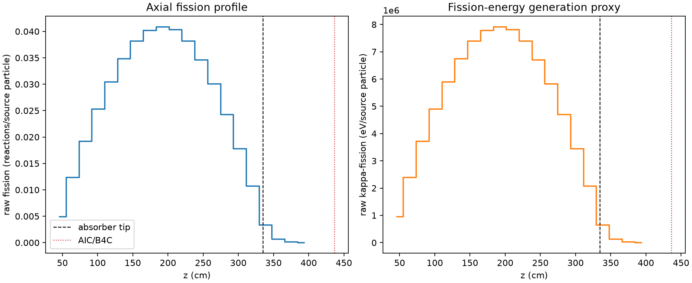
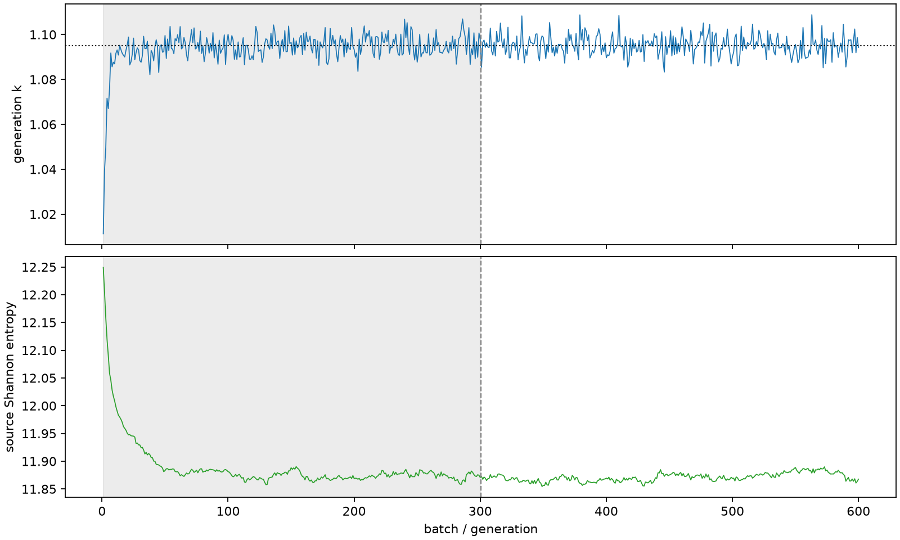

| field | value |
|---|---|
| experiment | V2-ADAPTIVE_01-0023 |
| k | 1.095056521865222 |
| MC standard error | 0.00017076956219742582 |
| seconds | 1039.8442598310066 |
| acceptance | not_assessed |
| convergence | review_required |
Completed is output integrity only; physical and statistical review required. Zero tallies do not prove zero production or zero uncertainty.
| diagnostic | value |
|---|---|
| geometric fuel voxels | 5280 |
| zero fission tally voxels | 0 |
| low signal fuel voxels | 253 |
| low signal fission share | 6.643563489211297e-05 |
| low signal kappa share | 6.646678338589654e-05 |
| important fission share | 0.9500628075411771 |
| previous filter included | 5027 |
| duration estimate s | 1562.5173488400023 |
| actual minus estimate s | -522.6730890089957 |
| fission relative MC error | statistics |
|---|---|
| all_geometric_fuel | {"voxels": 5280, "positive_mean_voxels": 5280, "zero_mean_voxels": 0, "undefined_relative_error_voxels": 0, "median": 0.010059758056937106, "p95": 0.16186814438923125, "maximum": 0.38752790609977783} |
| low_signal | {"voxels": 253, "positive_mean_voxels": 253, "zero_mean_voxels": 0, "undefined_relative_error_voxels": 0, "median": 0.2563091544123674, "p95": 0.3250024352467675, "maximum": 0.38752790609977783} |
| important_95pct | {"voxels": 3642, "positive_mean_voxels": 3642, "zero_mean_voxels": 0, "undefined_relative_error_voxels": 0, "median": 0.00880998916787815, "p95": 0.013362755423485024, "maximum": 0.016396167658272072} |
| outside_previous_filter | {"voxels": 253, "positive_mean_voxels": 253, "zero_mean_voxels": 0, "undefined_relative_error_voxels": 0, "median": 0.2563091544123674, "p95": 0.3250024352467675, "maximum": 0.38752790609977783} |
| kappa_fission relative MC error | statistics |
|---|---|
| all_geometric_fuel | {"voxels": 5280, "positive_mean_voxels": 5280, "zero_mean_voxels": 0, "undefined_relative_error_voxels": 0, "median": 0.010048261231408066, "p95": 0.16156060348176565, "maximum": 0.3871272963488071} |
| low_signal | {"voxels": 253, "positive_mean_voxels": 253, "zero_mean_voxels": 0, "undefined_relative_error_voxels": 0, "median": 0.25580006159998536, "p95": 0.3244627520747291, "maximum": 0.3871272963488071} |
| important_95pct | {"voxels": 3642, "positive_mean_voxels": 3642, "zero_mean_voxels": 0, "undefined_relative_error_voxels": 0, "median": 0.008799955029264828, "p95": 0.013347565812872133, "maximum": 0.016375488472064336} |
| outside_previous_filter | {"voxels": 253, "positive_mean_voxels": 253, "zero_mean_voxels": 0, "undefined_relative_error_voxels": 0, "median": 0.25580006159998536, "p95": 0.3244627520747291, "maximum": 0.3871272963488071} |
| axial bin | fission share | kappa-fission share |
|---|---|---|
| 1 | 0.01099278815465443 | 0.010993314727450243 |
| 2 | 0.02775886842019949 | 0.02775880923021114 |
| 3 | 0.043060610144909195 | 0.04306053107409109 |
| 4 | 0.056662950672821046 | 0.05666273718327425 |
| 5 | 0.06822291320787142 | 0.06822260173042426 |
| 6 | 0.07802555616195356 | 0.07802522281623 |
| 7 | 0.085488041029981 | 0.0854877197799125 |
| 8 | 0.08998114077889452 | 0.08998100312100955 |
| 9 | 0.09142263419223633 | 0.09142240847545499 |
| 10 | 0.09030532817509454 | 0.09030502117287052 |
| 11 | 0.08546434617280543 | 0.08546439901048185 |
| 12 | 0.07756044215482971 | 0.07756032169032456 |
| 13 | 0.06728237195251163 | 0.06728220143373827 |
| 14 | 0.05435665649787696 | 0.054356505212172314 |
| 15 | 0.03989034760238996 | 0.03989016606462477 |
| 16 | 0.02404556111663861 | 0.02404550461820134 |
| 17 | 0.007589780936733399 | 0.007591080086555291 |
| 18 | 0.0014711789235883864 | 0.0014718083947442466 |
| 19 | 0.00034902976100663536 | 0.00034915695421672803 |
| 20 | 6.945394300379497e-05 | 6.948722401196818e-05 |
Histories include the inactive-to-active transition at batch 300. kappa-fission approximates fission energy production, not total heat deposition.

